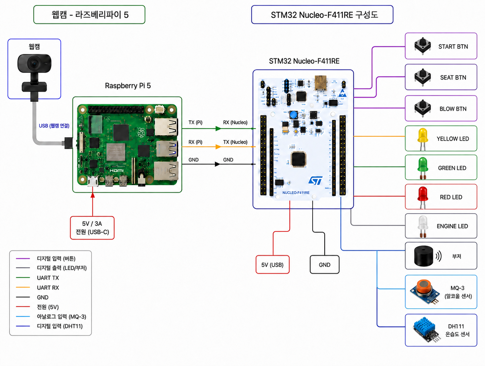
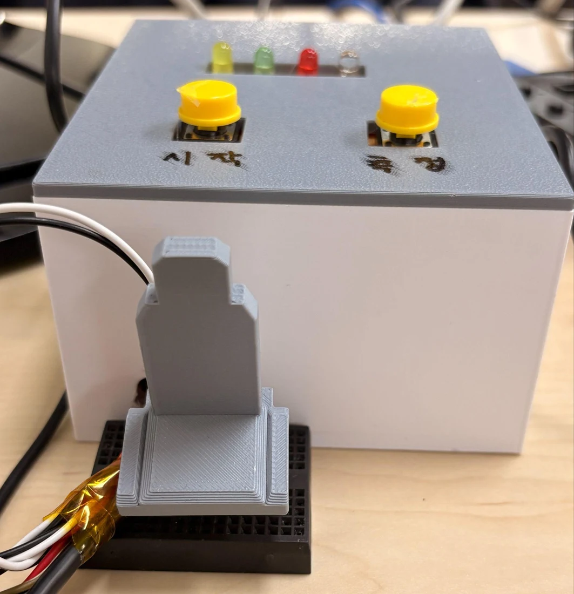
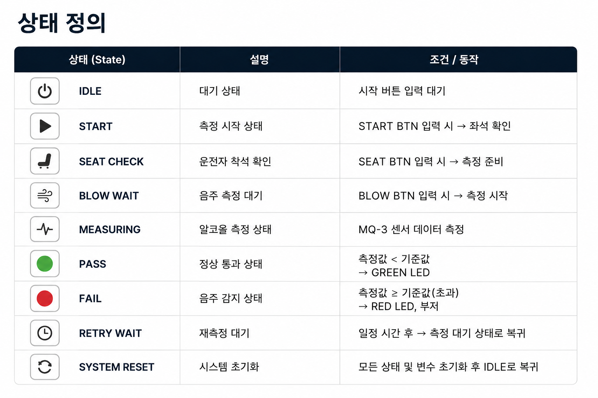
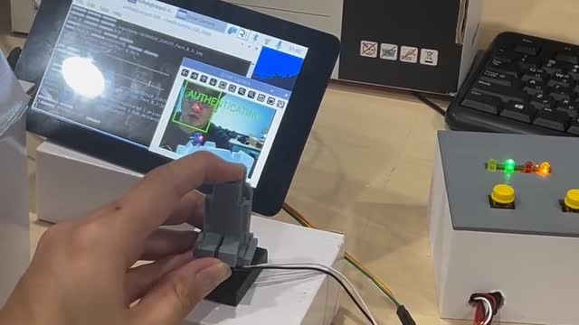

음주컷 · 하드웨어와 측정 상태 제어
하드웨어 설계와 STM32 펌웨어 공동 개발을 맡아, 입력·측정·응답에 따른 상태 전환을 구성했습니다.
전체 시스템
Raspberry Pi가 측정자를 확인하고 최종 판정을 전달하면 STM32가 센서·버튼을 읽고 결과를 출력합니다. 실제 차량 대신 LED로 시동 허용·차단을 표시한 시제품입니다.


내가 맡은 하드웨어 · 입력과 출력 연결
착석·불기 시작 버튼을 나누고 MQ-3·DHT11·상태 LED·부저를 연결했습니다. STM32와 Pi의 TX/RX·공통 GND로 측정값과 판정 결과가 왕복하는 경로를 구성했습니다.
공동 개발 · 상태마다 다른 전환 조건
착석 → 호흡 대기 → 측정 → 결과 대기 → 허용·차단으로 나눴습니다. 측정 5초·결과 대기 10초·재측정 안정화 5초를 구분해 입력과 시간에 맞춰 전환하도록 했습니다.
UART 이벤트와 응답 분기
SYSTEM_START·SEAT_ON/OFF·BLOW_START와 측정값을 전송했습니다. 1바이트 인터럽트 수신으로 응답을 모아 PASS / FAIL / RETRY / OTHER에 따라 상태와 출력을 바꾸도록 구성했습니다.
하드웨어: 박종빈 / 펌웨어 공동 개발: 박종빈·최세은. AI 모델과 최종 판단은 팀장 담당입니다.
정상 흐름 밖의 상황을 처리한 펌웨어
착석과 측정 시작 입력을 나누고, 자리 이탈·재측정·응답 시간 초과를 각각 처리하도록 개선했습니다.


01 · 착석과 측정 시작을 서로 다른 입력으로
문제 초기 단일 DETECT 입력으로는 착석과 측정 시작을 구분하기 어려웠습니다. 조치 SEAT·BLOW로 분리하고, 측정 중 이탈하면 10초간 복귀를 기다리도록 했습니다. 복귀 시 호흡 대기, 시간 초과 시 FAIL로 전환합니다.
02 · 센서 변화와 실제 호흡을 함께 확인
문제 MQ-3만으로는 실제로 숨을 불었는지 판단하기 어려웠습니다. 조치 DHT11 습도 변화량을 함께 확인하고 유효하지 않은 측정은 재측정 흐름으로 보냈습니다.
03 · 재측정 안정화와 응답 시간 초과
조치 RETRY 후 5초간 안정화하고 다시 호흡 입력을 기다립니다. 결과 응답이 10초간 없으면 ERROR를 전송하고 IDLE로 복귀합니다. 확인 팀 최종 발표에서 불지 않음·정상·음주·대리 측정·이탈 사례를 구분해 시연했습니다.